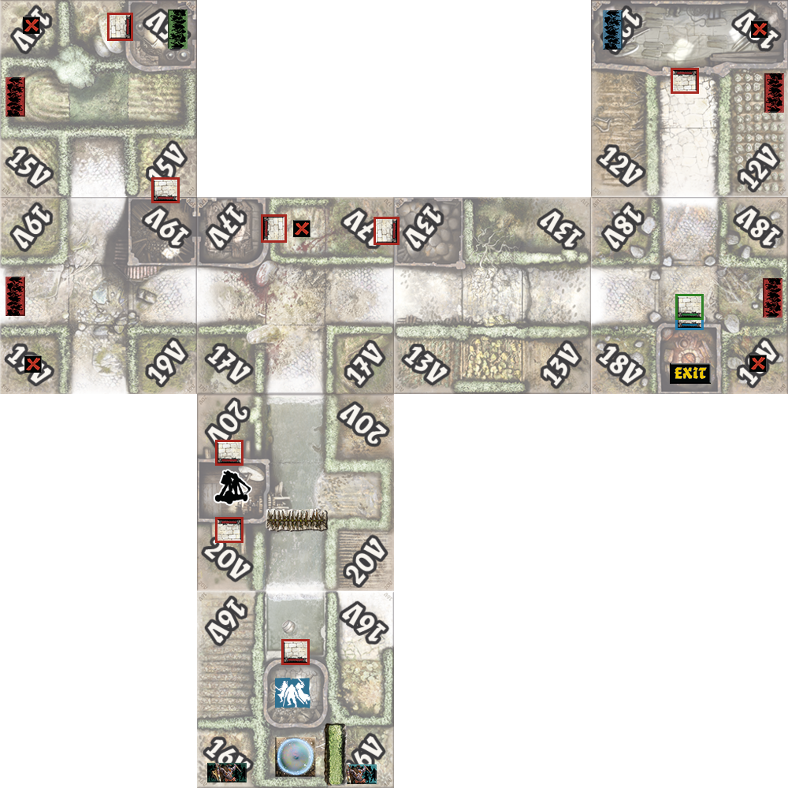

NecroRush
Targets
Objectives must be met in the following order
- Kill the green and blue necromancer
- All players must be in orange level
- Get to the exit
Special rules
- Necromancer spawns work like normal necromancer spawns, except that orcs do not spawn here
- Blue and green doors can only be opened after both necromancers have been killed
- Necromancer cannot spawn naturally (or remove their cards from the orc card deck)
- Keep the green and blue targets with you and use them to activate the necromancer
- The blue and green necromancer is activated by the player being on the green spawn and
activating it with the target
- The necromancer goes to that colored spawn
- Each boss (monster and necromancer) have double life and damage
- You can only be in the shield for a maximum of one round, if you no longer have actions, you
must come out of it at the start of the next round
- To pass through the bush, the player rolls (1 - failed, 2-5 - passed, 6 - passed + spawns an orc
walker in that zone)
Preparation
- Games: Zombicide Green Horde
- Assemble the game plan 16V, 20V, 17V, 13V, 18V, 12V, 19V, 15V
- Prepare tokens (spawn doors, etc.)
- Prepare trebuchet
- Shuffle and prepare targets (1 blue 1 green + 3 red)

NecroRush - CZ
NecroRush - EN